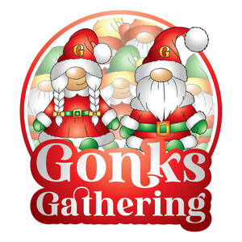
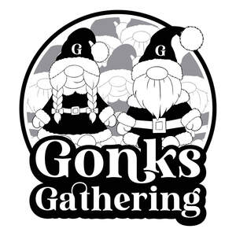

Trade Mark Journal No.2026/011 13 March 2026
UK00004344621 24 February 2026 (9,14,16,25,35,41,43)
Mark 1

Mark 2

- Class 9
- Media content; Downloadable digital photos; Mobile apps; Software for processing digital images; Downloadable mobile applications for the management of data; Digital storage media; Smartphone software applications, downloadable; Computer digital maps.
- Class 14
- Jewelry; Necklaces [jewellery, jewelry (Am.)]; Bracelets [jewellery, jewelry (Am.)]; Necklaces [jewelry]; Ornaments [jewellery, jewelry (Am.)]; Amulets [jewellery, jewelry (Am.)]; Brooches [jewellery, jewelry (Am.)]; Medallions [jewellery, jewelry (Am.)]; Rings [jewellery, jewelry (Am.)]; Trinkets [jewellery, jewelry (Am.)]; Pins [jewellery, jewelry (Am.)]; Pearls [jewellery, jewelry (Am.)]; Chains [jewellery, jewelry (Am.)]; Ivory [jewellery, jewelry (Am.)]; Charms [jewellery, jewelry (Am.)]; Cloisonné jewellery [jewelry (Am.)]; Lockets [jewellery, jewelry (Am.)]; Bracelets [jewelry]; Brooches [jewelry]; Jewelry brooches; Brooches being jewelry; Pendants [jewelry]; Necklaces [jewellery]; Silver thread [jewellery, jewelry (Am.)]; Gold thread [jewellery, jewelry (Am.)]; Wire of precious metal [jewellery, jewelry (Am.)]; Amulets [jewelry]; Diamond jewelry; Jewellery; Shoe jewelry; Platinum jewelry; Rings [jewelry]; Jewelry (Paste -) [costume jewelry]; Paste jewelry [costume jewelry]; Threads of precious metal [jewellery, jewelry (Am.)]; Paste jewellery [costume jewelry (Am.)]; Paste jewellery [costume jewelry [Am.]]; Jewelry stickpins; Bracelets [jewellery]; Lockets [jewelry]; Pearls [jewelry]; Charms [jewelry]; Jewelry charms; Charms for jewelry; Trinkets [jewelry]; Clasps for jewelry; Jewelry caskets; Pendants [jewellery]; Jewelry hatpins; Costume jewelry; Ivory jewelry; Jewelry boxes; Pins being jewelry; Pins [jewelry]; Jewelry chains; Chains [jewelry]; Jewellery chain of precious metal for necklaces; Ornaments [jewellery]; Gold jewellery; Brooches [jewellery]; Jewellery brooches; Amulets being jewellery; Amulets [jewellery]; Silver necklaces; Rings being jewellery; Rings [jewellery]; Charms [jewellery]; Charms for jewellery; Jewellery charms; Fashion jewellery; Jewelry rolls; Silver earrings; Musical jewelry boxes; Precious jewellery; Costume jewellery; Jewelry cases of precious metal; Clasps for jewellery; Jewellery stones; Beads for making jewelry; Jewelry for the head; Jewellery boxes.
- Class 16
- Printed matter; Planners [printed matter]; Diaries [printed matter]; Printed books; Printed paper signs; Printed promotional material; Printed timetables; Timetables (Printed -); Printed cards; Printed stationery; Photographs [printed]; Printed photographs; Printed informational cards; Forms, printed; Printed forms; Printed tickets; Printed informational folders; Printed paper signs featuring names for use for special events; Printed diagrams; Printed pamphlets; Printed visuals; Printed advertising boards of paper; Printing type; Printing paper; Digital printing paper; Printed leaflets; Printed flyers; Printing papers; Printed survey answer sheets.
- Class 25
- Clothing; Jerseys [clothing]; Jackets (Stuff -) [clothing]; Stuff jackets [clothing]; Leisure clothing; Clothing for leisure wear; Parts of clothing, footwear and headgear; Knitwear [clothing]; Jackets [clothing]; Ready-to-wear clothing; Wristbands [clothing]; Aprons [clothing]; Garments for protecting clothing; Woolen clothing; Money belts [clothing]; Fabric belts [clothing]; Headbands for clothing; Gloves [clothing]; Gloves as clothing; Babies' clothing; Ladies' clothing; Casual clothing; Articles of clothing; Clothing for children; Hoods [clothing]; Maternity clothing; Printed t-shirts.
- Class 35
- Advertising and marketing services; Promotion [advertising] of business; Marketing; Advertising, marketing and promotion services; Marketing, advertising and promotion services; Advertising and marketing; On-line advertising and marketing services; Marketing services; Business project management; Advertising, promotional and marketing services; Advertising, marketing and promotional services; Marketing, advertising, and promotional services; Business process management; Business promotion services; Modeling services for advertising or sales promotion; Business management of entertainers; Advertising, marketing and promotional consultancy, advisory and assistance services; Business promotion; Promotion of goods and services through sponsorship; Organisation of events for commercial and advertising purposes; Advertising services to create corporate and brand identity; Organization of exhibitions for commercial or advertising purposes; Sales promotion services for third parties; Administration of competitions for advertising purposes; Organisation of exhibitions for commercial and advertising purposes; Organisation of exhibitions for commercial or advertising purposes; Brand creation services (advertising and promotion); Advertising and advertisement services; Advertising; Advertising services; Digital advertising services; Graphic advertising services; Advertising and publicity services; Advertising services of a radio and television advertising agency; Advertising copywriting; Online advertising services; Advertising, promotional and public relations services; Advertising and promotion services; Advertising and promotional services; Promotional and advertising services; Promotional advertising services; Promotion, advertising and marketing of on-line websites; Advertising, including on-line advertising on a computer network; Press advertising services; Advertising and marketing services provided by means of social media; Design of advertising flyers; Production of advertising materials; Advertising services provided by a radio and television advertising agency; On-line advertising; Online advertising; Advertising flyer distribution; Preparation of advertising campaigns; Banner advertising; Advertising particularly services for the promotion of goods; Development of advertising concepts; Distribution of advertising materials; Design of advertising materials; Research services relating to advertising and marketing; Advertising of business web sites; Advertising and publicity; Publicity and advertising; Advertising services by means of sandwich board; Announcement services for advertising purposes; Newspaper advertising.
- Class 41
- Dance events; Organising of festivals; Organisation of festivals; Arranging of cultural events; Organizing cultural and arts events; Conducting of cultural events; Hosting of entertainment events; Organising community cultural events; Booking of seats for shows and sports events; Ice-skating events (Organising of -); Organizing community sporting and cultural events; Conducting of entertainment events; Organising dancing events; Organising of recreational events; Organisation of entertainment events; Organisation of cultural events; Organisation of entertainment and cultural events; Publication of calendars of events; Organization of entertainment events; Organising events for cultural purposes; Organisation of musical events; Organization of dancing events; Arranging of festivals for cultural purposes; Organising events for entertainment purposes; Musical events (Arranging of -); Arranging of musical events; Organization of cosplay entertainment events; Production of live entertainment events; Conducting of live entertainment events; Organisation of conferences, exhibitions and competitions; Festivals (Organisation of -) for cultural purposes; Booking of seats for entertainment events; Entertainment services in the nature of live performances of roller skating exhibitions and competitions; Organisation of events for cultural, entertainment and sporting purposes; Organising of festivals relating to jazz music; Arranging of festivals for entertainment purposes; Festivals (Organisation of -) for entertainment purposes; Arranging for ticket reservations for shows and other entertainment events; Booking of performing artists for events (services of a promoter); Entertainment services in the nature of skating events; Presentation of live entertainment events; Disc jockeys for parties and special events; Music festival services; Ticket reservation for cultural events; Organization of events for cultural purposes; Disc jockey services for parties and special events; Theatrical shows provided at performance venues; Music concerts; Arranging and conducting of entertainment events; Entertainment services in the nature of organizing social entertainment events; Arranging and conducting of live entertainment events; Conducting of performing arts festivals; Providing will-call ticket services for entertainment, sporting and cultural events; Organising of entertainment competitions; Organising of competitions for entertainment; Competitions (Organising of entertainment -); Festivals (Organisation of -) for recreational purposes; Entertainment; Musical group entertainment services; Corporate entertainment services; Music entertainment services; Musical entertainment; Corporate hospitality (entertainment); Interactive entertainment; Musical entertainment services; Entertainment services; Entertainment services in the form of musical group performances; Entertainment services by stage production and cabaret; Entertainment services provided by a music group; Entertainment services for children; Interactive entertainment services; Entertainment services in the nature of arranging social entertainment events; Ticket reservation and booking services for education, entertainment and sports activities and events; Booking of entertainment; Entertainment services provided by a musical group; Video entertainment services; Organization of competitions [education or entertainment]; Competitions (Organization of -) [education or entertainment]; Organization of competitions for education or entertainment; Entertainment in the nature of dance performances; Entertainment services performed by a musical group; Entertainment, education and instruction services; Popular entertainment services; Entertainment in the nature of ballet performances; On-line entertainment; Radio entertainment; Arranging of competitions for education or entertainment; Hospitality services (entertainment); Online entertainment services; Services for the production of entertainment in the form of television; Laser show services [entertainment]; Radio entertainment services; Online interactive entertainment; Audio entertainment services; Fan club services (entertainment); Radio entertainment production; Entertainment booking services; Entertainment services in the form of concert performances; Entertainment, sporting and cultural activities; Production of entertainment shows featuring dancers; Television and radio entertainment services; Radio and television entertainment services; Live entertainment services; Artistic management of entertainment venues; Production of audio entertainment; Production of television entertainment features; Entertainment services in the form of musical vocal group performances; Organisation of competitions [education or entertainment]; Organisation of competitions (education or entertainment); Competitions (organisation of -) [education or entertainment]; Organisation of competitions for education or entertainment; Live entertainment production services; Road shows being entertainment services; Live entertainment; Entertainment services provided by a musical vocal group; Production of live entertainment; Entertainment services in the nature of competitions; Organization of entertainment competitions; Provision of musical entertainment; Animated musical entertainment services; Film production for entertainment purposes; Entertainment in the nature of theater productions; Entertainment by means of theatre productions; Entertainment by means of television; Production of films for entertainment purposes; Rental services relating to equipment and facilities for education, entertainment, sports and culture; Services for the production of entertainment in the form of video; Exhibition services for entertainment purposes; Entertainment services provided by television; Services for the production of entertainment in the form of film; Entertainment services in the nature of contests; Entertainment in the nature of live dance performances; Entertainment in the nature of television news shows; Television and radio entertainment; Radio and television entertainment; Entertainment services relating to quizzes; Production of television entertainment programmes; Planning (Party -) [entertainment]; Party planning [entertainment]; Sporting and cultural activities; Cultural and sporting activities; Education and training in the field of music and entertainment; Conducting of entertainment activities; Arranging and conducting of competitions [education or entertainment]; Entertainment club services; Club entertainment services; Club services [entertainment]; Organisation of competitions [education and/or entertainment]; Educational and instruction services relating to arts and crafts; Club education services; Cultural activities; Educational services relating to dancing; Entertainment in the nature of gymnastic performances; Organisation of outings for entertainment; Musical education services; Providing cultural activities; Education services in the form of music television programmes; Education services relating to music; Organisation of entertainment competitions; Jazz music entertainment services; Music education; Organisation of entertainment services; Organisation of recreational activities; Entertainment services in the form of television programmes.
- Class 43
- Hospitality services [accommodation]; Hospitality services [food and drink]; Accommodation services; Providing food and drink catering services for exhibition facilities; Catering services for the provision of food; Catering services for the provision of food and drink; Corporate hospitality (provision of food and drink); Food preparation services; Services for providing food; Accommodation reservation services; Reservation services for accommodation; Services for providing food and drink; Booking services for accommodation; Take-away food services; Catering for the provision of food and beverages; Restaurant services for the provision of fast food; Food and drink preparation services; Services for the preparation of food and drink; Temporary accommodation services; Catering services for providing European-style cuisine; Services for the provision of food and drink; Charitable services, namely providing food and drink catering; Contract food services; Takeaway food services; Catering services; Catering for the provision of food and drink; Food and drink catering for institutions; Catering of food and drinks; Take-away food and drink services; Business catering services; Take-away fast food services; Food and drink catering; Catering of food and drink; Catering (Food and drink -); Mobile catering services; Providing food and drink for guests.
Fairs Fayre Festivals and Events Ltd